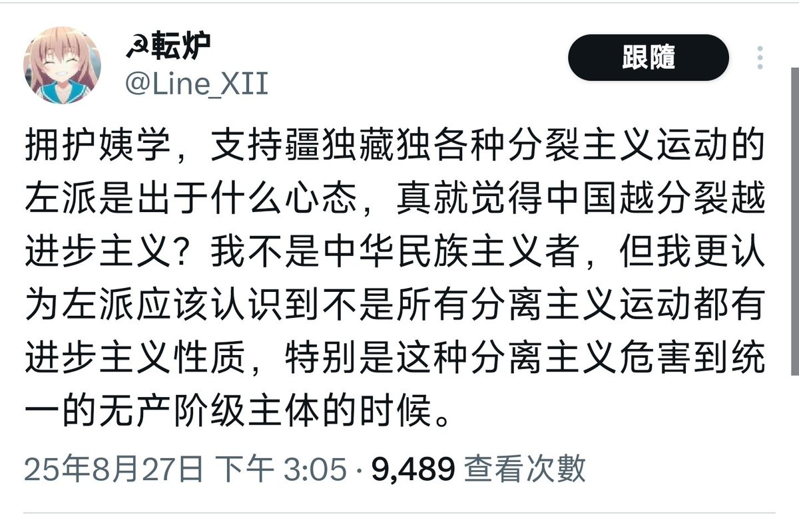

𝐀𝐬𝐡𝐥𝐞𝐲 𝐁𝐥𝐨𝐜𝐤🍥🌹🇹🇼🏳️⚧️
@bolckAshley
且不說你文中的有些「...安全」是純粹的偽命題，你這種「中國領土一寸都不能少」的觀點，考慮過當地民眾的自決權嗎？
前段時間好歹還裝一下，現在乾脆演都不演了，直接暴露自己大國沙文主義的本質了是吧💧

☭転炉
@Line_XII
那我的观点就不一样了，对于我这个大中华胶而言，中国领土一寸都不能少。丢失东北，中国就失去了粮食安全，丢失新疆，中国就失去了能源安全，丢失西藏，中国就失去了地缘安全。你口中的“非基本盘”和汉地十八省的命运是紧紧捆绑在一起的。 https://t.co/HhvNbpxfrJ